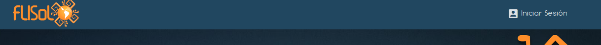
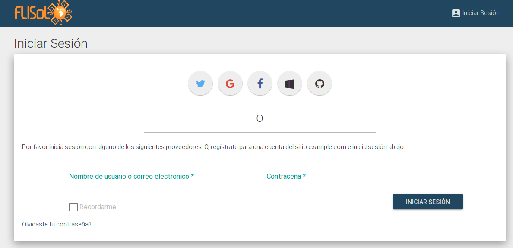
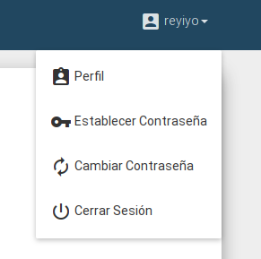

Login y Registración
Los colaboradores de una sede, deberán darse de alta como usuarios de la plataforma.
Crear usuario
- Desplegar el menú "Organizadores" en la esquina superior derecha de la pantalla y seleccionar la opción "Iniciar Sesión".

- Al ingresar, aparecerá una pantalla como la siguiente:

Aquí se puede elegir iniciar sesión con alguna red social (proveedor de oAuth) o crear un usuario local seleccionando el link "regístrate".
El registro es bastante sencillo. Hay que seguir los pasos para cada red social o llenar los datos que se solicitan para un usuario local.
A veces, es necesario confirmar la dirección de correo electrónico, por lo que la plataforma enviará un mail con un enlace de verificación a la dirección provista.
Establecer una contraseña
Si vas a ser organizador de algún evento, para entrar a la página de administración, es necesario establecer una contraseña. La misma la puedes establecer seleccionando la opción "Establecer contraseña" en el menú desplegable del usuario.

Iniciar sesión
Una vez que tenemos el usuario creado, podemos iniciar sesión en la aplicación. Para esto, ingresar a link "Iniciar Sesión" dentro de "Organizadores", en la esquina superior derecha de la pantalla.
Y seleccionar la opción con la que el usuario fue creado. Por ejemplo, si el usuario lo creamos seleccionando "Twitter", luego iniciaremos sesión seleccionando la opción "Twitter".